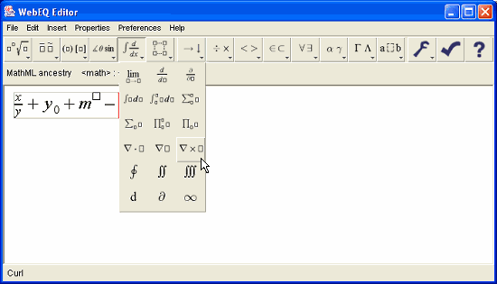
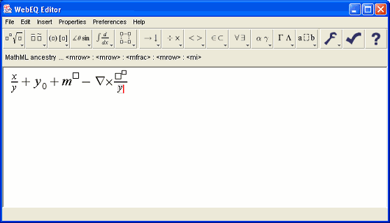
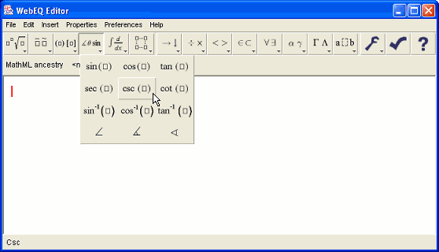
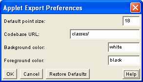

WebEQ Editor is based on the idea of an equation template. There are templates for fractions, subscripts, superscripts, matrices, etc. To build an equation, insert templates, and then fill in the blanks.

To fill in the blanks, enter letters and numbers from the keyboard, select symbols from a palette, or replace a blank with another template. If you select something before inserting a template from the toolbar, the symbol or expression you've selected will automatically be inserted into the first blank in the template. Some people describe this as "wrapping" a template around a selection.
By nesting equation templates inside one another, you can build up almost any equation. Navigate around an equation using the mouse and arrow keys. You can also cut and paste subexpressions to build up more complex expressions.

The WebEQ Editor templates and symbols are directly based on MathML. See the WebEQ Developers Suite documentation for more information about MathML.
The WebEQ Editor allows you to change many layout and style properties to fine-tune visual appearances using the Properties Menu.
WebEQ Editor tries to make cursor movement as natural and as intuitive as possible. In general, the left, right, up and down arrows move the cursor to the next valid insertion point in the corresponding direction. Similarly, clicking the mouse anywhere in an equation moves the cursor to the closest valid location to the click.
Behind the scenes, WebEQ Editor is negotiating a potentially complicated nested structure of MathML templates. Moving the cursor one position to the right on the screen can involve jumping in and out of MathML structures. The MathML Ancestry gives you information about the MathML structure of the equation.
The cursor may occasionally not move exactly as you would expect on account of the nesting of the MathML structure. In these cases, the cursor movement is giving you additional information about the structure of your equation.
Watch the gray box attached to the cursor. The gray box indicates the current template in which the cursor is located. Usually, unexpected cursor motion is the result of moving in and out of templates. See the WebEQ Developers Suite documentation for more information.
To enter a symbol in an equation, click on it the toolbar, or select it from one of the pulldown symbol palettes, also on the toolbar.

The standard toolbar configuration contains many commonly used symbol characters. However, there are many symbols available in WebEQ which do not appear in the standard toolbar. See Toolbar Preferences for information about customizing the toolbar.
Once you are satisfied with your equation, you can save it in several formats. You can save it as an image, write out the MathML encoding to a file, or write out WebEQ Viewer Control applet code. When you save an applet or image, you can import it into an HTML page using your favorite HTML editing tools.
All of these functions are available on the File Menu. When you choose "Save" or "Save As" the first time, you will be prompted to choose the output format you wish to use. You can set options about the output format from the Preferences Menu.

In order to be able to open a saved equation in WebEQ Editor again, you must save the equation in MathML format.